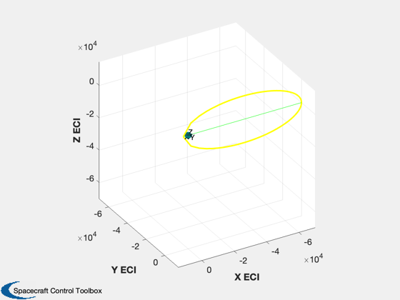
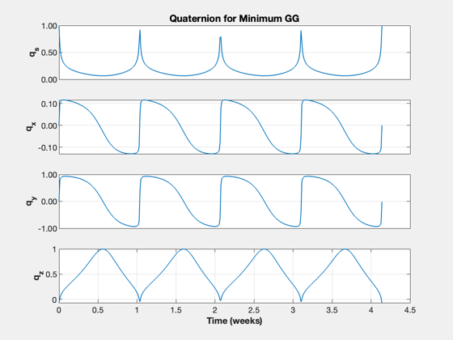
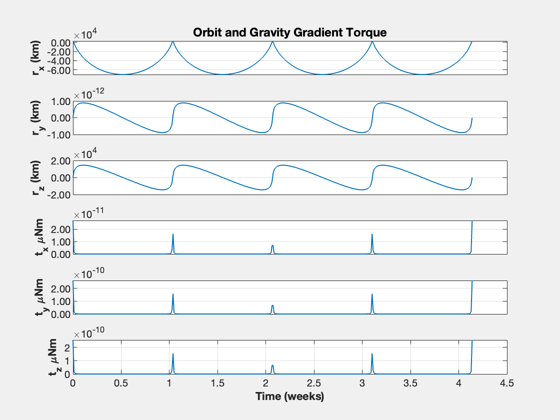
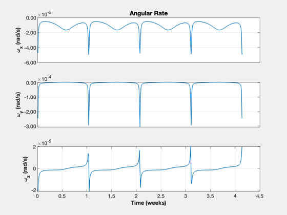
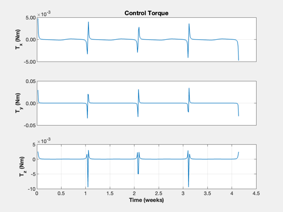

Gravity gradient analysis of Gateway orbit
See also: Constant, Date2JD, RPRA2AE, Period, RVOrbGen, PltOrbit, UMinGG, U2Q, QForm, Cross, TimeHistory, DeltaQToRate, PrintFig
Contents
%-------------------------------------------------------------------------- % Copyright (c) 2022 Princeton Satellite Systems, Inc. % All rights reserved. %-------------------------------------------------------------------------- % Since 2023.1 %--------------------------------------------------------------------------
User inputs
Constants
mu = Constant('mu moon'); rM = Constant('equatorial radius moon'); % Gateway rA = 70000; % apogee rP = 3000; % perigee % The body inertia is used for gravity gradient inertia = [1.6406e+06 -8.6764e+04 -4.7583e+03;... -8.6764e+04 9.9031e+05 -8.5474e+02;... -4.7583e+03 -8.5474e+02 1.8093e+06]; cM = [ -3.1182e-04; 4.2778e-05; -1.5026e-05]; % Script control nOrbits = 4; nSamp = 400; jD0 = Date2JD([2024 2 2]); % Plot printPlots = false;
Calculate
if( printPlots ) close all end % Orbit [a, e] = RPRA2AE( rP, rA ); el = [a pi/2 0 0 e 0]; period = Period( a, mu ); t = linspace(0,nOrbits*period,nSamp); dT = t(2); [r,v] = RVOrbGen(el,t,[],mu); PltOrbit( el, jD0, [], 'moon' ); u = UMinGG(inertia ); q = zeros(4,nSamp); m = zeros(3,nSamp); for k = 1:nSamp q(:,k) = U2Q(Unit(r(:,k)),u); rB = QForm(q(:,k),r(:,k)); m(:,k) = 3*mu*Cross( rB, inertia*rB )/Mag(rB)^5; end
Plot
TimeHistory(t,q,{'q_s' 'q_x' 'q_y' 'q_z'},'Quaternion for Minimum GG');
yL = {'r_x (km)' 'r_y (km)' 'r_z (km)' 't_x \muNm' 't_y \muNm' 't_z \muNm'};
TimeHistory(t,[r;m],yL,'Orbit and Gravity Gradient Torque');
  Delta rates and torques
omega = DeltaQToRate(q,dT);
yL = {'\omega_x (rad/s)' '\omega_y (rad/s)' '\omega_z (rad/s)'};
TimeHistory(t(2:end),omega,yL, 'Angular Rate');
torque = inertia*(omega(:,2:end)-omega(:,1:end-1))/dT;
yL = {'T_x (Nm)' 'T_y (Nm)' 'T_z (Nm)'};
TimeHistory(t(3:end),torque,yL, 'Control Torque');
  Print to file
if( printPlots ) PrintFig(1,4,2,'GG1') PrintFig(1,4,3,'GG2') PrintFig(1,4,4,'GG3') PrintFig(1,4,5,'GG4') end %-------------------------------------- % $Id: c62d3d3f1d7c01c77f05f4d656f15ba329e86462 $